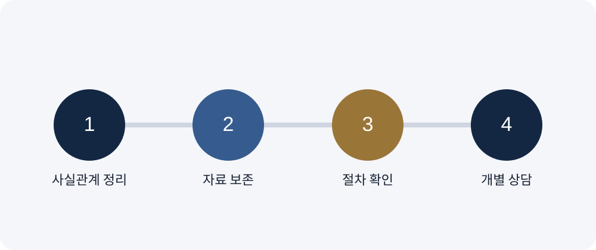

카메라등이용촬영변호사 피해자와 합의하면 기소유예를 받을 가능성이 높아질까
피해자 합의의 의미, 기소유예 판단 요소, 직접 연락 위험과 함께 준비할 양형자료를 안내합니다. 카메라등이용촬영 사건은 단순히 사진이나 영상이 존재한다는 사실만이 아니라 촬영 대상, 구도, 장소, 촬영대상자의 의사, 반복성, 저장·삭제·전송 과정과 수사 절차를 함께 살펴야 합니다.
1.합의는 중요한 요소지만 전부가 아니다
촬영 횟수, 피해 정도, 유포 여부, 전력과 반성 정도가 함께 검토됩니다.
2.피해자 의사 존중
합의를 재촉하거나 반복 연락하면 2차 피해로 받아들여질 수 있습니다.

3.절차를 통한 의사 전달
중립적인 방식으로 사과와 피해 회복 의사를 전달하는 방법을 검토해야 합니다.
4.추가 자료 준비
재범 방지 교육, 상담, 생활 개선과 반성 경위를 구체화할 수 있습니다.
5.법률 판단에서 함께 살펴볼 사항
현행 성폭력처벌법은 카메라나 유사한 기능을 가진 장치를 이용해 성적 욕망 또는 수치심을 유발할 수 있는 사람의 신체를 촬영대상자의 의사에 반하여 촬영하는 행위를 규정하고 있습니다. 실제 사건에서는 촬영 대상과 방식, 동의 여부, 파일의 생성·보관·전송 경위와 적법한 증거 수집 절차를 구체적으로 확인해야 합니다.
- 수사기관 연락 내용과 조사 일정을 확인했습니다.
- 사건 전후 흐름을 시간 순서대로 작성했습니다.
- 대화·사진·영상·이동 기록의 원본을 보존했습니다.
- 상대방에게 감정적인 연락을 하지 않았습니다.
6.자주 묻는 질문
경찰 연락을 받은 날 바로 출석해야 하나요?
일정을 협의할 수 있는 경우가 있으므로 담당자와 확인하되 무단으로 미루지 않아야 합니다.
자료를 정리하다가 불리한 내용이 나오면 삭제해도 되나요?
불리하다고 판단되는 자료도 임의로 삭제하지 말고 전체 맥락을 검토해야 합니다.
상대방에게 먼저 사과해도 되나요?
사과 의도라도 압박이나 회유로 오해될 수 있으므로 접촉 방식과 시점을 신중히 정해야 합니다.
8.카메라등이용촬영변호사 세부 법률정보 20선
카메라등이용촬영 사건의 경찰조사, 압수수색, 포렌식, 초범·재범, 합의, 증거와 재판 대응 등 검색 목적별 세부 안내를 확인할 수 있습니다.
사건이 진행 중이라면 상담을 미루지 마세요
수사기관 연락과 사건 흐름, 보유 자료를 정리했다면 외부 법률상담 페이지에서 상담 접수를 진행할 수 있습니다.
법률상담 바로가기 →버튼을 누르면 법무법인 대륜의 외부 상담 페이지로 이동합니다.